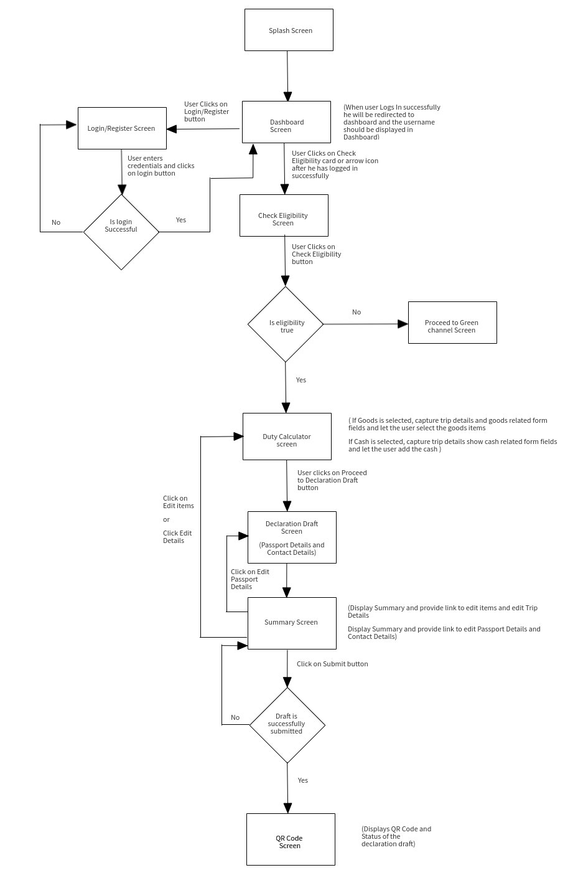

Project Background
Dubai Customs needed a app where the travellers can declare their personal goods, check whether the goods are legal or illegal and calculate the duty fees. The main purpose of the app is to encourage the travellers to fill in the digital declaration form instead of manual form.
Role
UX/UI Designer
Tools
Photoshop, Adobe XD, Mockflow, Illustrator
Date
2019
Target Audience and Problem the product solves
The target audience are travelers to Dubai. The problem the product solves is, instead of filling manual form to declare the items the travelers can list the personal goods in the app and declare the items they carry with them. Time is reduced from 45minutes to 5minutes during checking the declared goods by Dubai Customs officers.
The business challenges the team wanted to solve with the project
Easy way to check eligibility before declaring the personal goods in the app. Create Declaration of personal goods using the app and generate the QR code for the Declared items. And, provide duty calculator so that users can know the duty to be paid at the airport.
My role and people I worked in the project
My role was to create User Experience for the IDeclare Mobile App. I created Personas, Task Flow, Information architecture, Wireframes and Visual Design.
Interacted with Client, Wipro Business Analyst and Wipro Xamarin(To understand Technology Constraints) Developer. Refined the requirement as the project progressed to align both business strategy and UX strategy
Design Process
- Empathize - Survey, User Interview
- Define - User Persona, User Journey Mapping, Point Of View(User, Needs and Insights)
- Ideate - HMW (How Might We), Brain Storming Ideas, Product road map, User flow, Sketches.
- Design/Build - Wireframes, Prototype(Visual Design)
- Test - Usability Testing

1.Empathize - Survey
A survey with 10 frequent travelers with similar product was done using Google form. The questions were based on habits, motivation, and challenges while using similar products. The responses were collected in the form of multiple choice and short answers to get more insights at an early stage.
2.Define - Persona, User Journey, Point of View(Users + Needs + Insights)
Persona
After getting insights from user research I had a clear understanding of who my target user will be and created a persona. User persona will help me make better design decisions that will satisfy the user's needs.
Based on the research I set up three persona. I referred to them throughout the entire product development process. For each persona I identified the key tasks as well as their emotional state at each stage in the journey.

User Journey

Point of View(Users + Needs + Insights)

3.Ideate - Sketches, Sitemap, Userflow
Sketches
I started drawing sketches using paper and pencil during the ideation phase. I drew two to three versions to get the desired output based on the research and insights.

Sitemap(For entire app)

Userflow(For Creating Declaration and generating QR Code)

4.Design - Wireframes and Prototype(Visual Design)
Interaction Design Process followed for User Interface creation

Wireframes

Prototype(Visual Design)


5.Test - Usability Testing
The stakeholder recruited 5 people to test the prototype. The participants were aged between 30 - 45yrs who were vacationers and business travelers and use similar product users.
The objective of the test was :
- How easily users are able to complete the task.
- How easy to find the information present in the app.
- How easy is it to fill the information in app instead of manual form.
- How does the overall experience feel like.
- What improvements need to be made.
- 5 out of the 5 participants were able to find the information they needed.
- 5 out of the 5 participants were able to complete the task of generating the QR Code.
- 4 out of 5 the 5 participants were able to track the declaration they created.
- 4 participants felt the experience was smooth